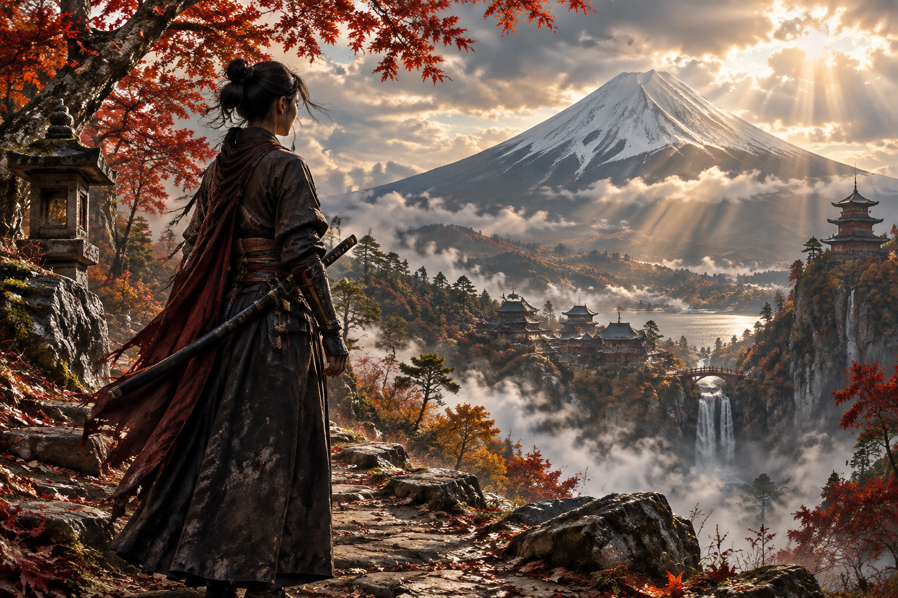

1位

Ghost of Yōtei: Echoes of Sekigahara
昨年発売のPS5大作『Ghost of Yōtei』に待望の大型DLCが登場！新エリア「アショロの丘陵地帯」が追加されるほか、主人公アツの過去に関わる人物が登場し、重厚な物語が展開。また新モード「Most Wanted」ではローグライク要素を交えた波状攻撃サバイバルが楽しめ、金狐の侍・ジン・サカイも操作可能という豪華仕様。完全版は本編と全DLCをまとめてお得に入手できる絶好の機会だ。
おすすめ理由：Metacritic84点と批評家から高評価。新ストーリーとローグライクモードの二本立てで、既プレイ者も新規層もボリューム満点に楽しめる。